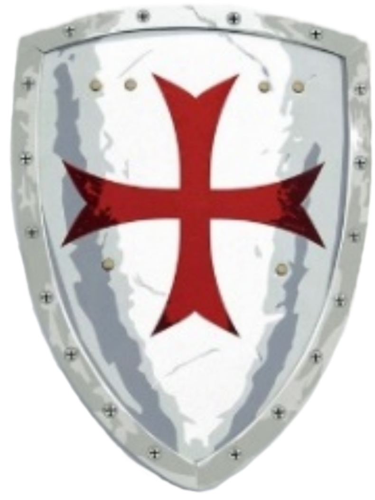

Sobre a Ordem
A “Ordem dos Escudeiros de Cristo” é uma iniciativa da Paróquia São Lourenço Mártir, com autorização do então Pároco, Cônego Bruno Cesar Dias Graciano, e formado com o objetivo de ampliar a vivência na fé católica e incentivar ações baseadas nos ensinamentos cristãos para nossas crianças e adolescentes.
A Ordem foi inaugurada em 29 de março de 2019 e conta, hoje, com vários integrantes que, em meio a atividades recreativas, palestras, treinamentos e reflexivas, desenvolvem seus conhecimentos religiosos, socioculturais, esportivos, educacionais.
A missão da Ordem é contribuir para a formação de adultos conscientes de suas capacidades e de suas fragilidades, cativados espiritualmente pelos ensinamentos de Jesus Cristo, integrados com a fé católica, cientes de seus direitos civis e comprometidos com seus deveres perante a Sociedade e à Igreja.
“A primeira Jerusalém a ser conquistada é a de nossos corações”. A batalha pela Verdade de Cristo começa cedo. Nossos jovens escudeiros e cavaleiros são conduzidos a refletirem sobre o seu papel nesta batalha. O escudo de sua fé é forjado em suas orações e o aço de sua espada tem a têmpera de suas ações, na mesma medida em que forem capazes de refletir os ensinamentos de Jesus.
- 